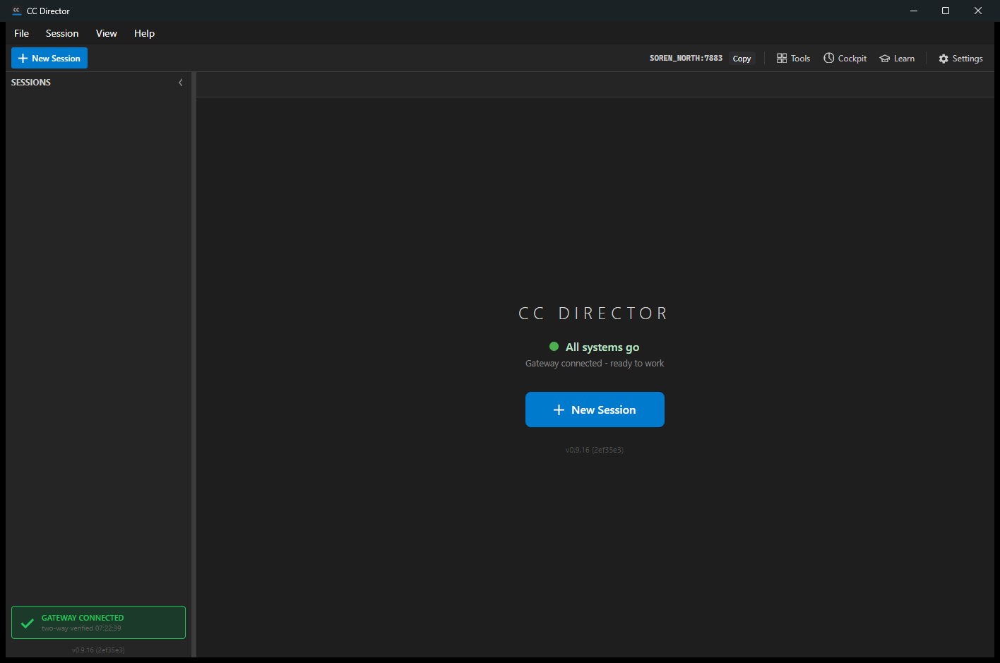

PASS.
The recovered branch is based on current main and contains concrete
plugins for all built-in agent CLIs. Final QA verified the plugin registry,
external loader, desktop build, isolated slot launch, and live settings catalog.
dotnet test src\CcDirector.Core.Tests\CcDirector.Core.Tests.csproj --filter "FullyQualifiedName~AgentPlugin" /m:1 /nodeReuse:false Passed! - Failed: 0, Passed: 33, Skipped: 0, Total: 33
dotnet build src\CcDirector.Avalonia\CcDirector.Avalonia.csproj /m:1 /nodeReuse:false Build succeeded. 0 Warning(s) 0 Error(s)
15http://127.0.0.1:7883screenshots/healthz.json returned status=okscreenshots/settings-catalog.json
| Agent | History Provider | Preassigned Session | Studio Mode | Capabilities |
|---|---|---|---|---|
| Claude Code | TranscriptFile | true | true | ClearContext, Cancel, TranscriptRead, PreassignedSessionId, Interrupt, History, ModelSelection |
| Pi | TranscriptFile | false | false | ClearContext, Cancel |
| Codex | TranscriptFile | false | false | ClearContext, Cancel, Interrupt |
| Gemini | TerminalBuffer | false | false | Cancel, Interrupt |
| OpenCode | SqliteStore | false | false | Cancel, Interrupt |
| Cursor | None | false | true | Interrupt |
| Grok | TranscriptFile | false | false | Cancel, Interrupt |
| GitHub Copilot | SqliteStore | true | false | PreassignedSessionId, Interrupt |
| Raw CLI | None | false | false | custom terminal mode, not a built-in plugin |
issue-748: plugin contractissue-749: Settings metadata and Settings dialog proofissue-750: launch creation through plugin factoriesissue-751: Claude Code concrete pluginissue-752: Cursor concrete pluginissue-753: GitHub Copilot concrete pluginissue-754: Pi concrete pluginissue-755: Gemini concrete plugin and History layout proofissue-756: OpenCode concrete pluginissue-757: Grok concrete pluginissue-758: external plugin DLL loaderissue-759: legacy adapter removal
The slot isolation launch helper still searches for an older
Kestrel listening log phrase. For live QA after issue 754, the slot
was still started through the scheduled-task slot path, but the port was detected
from the current Control API listening log line.